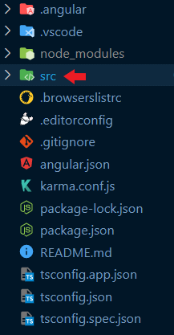

<div class="accordion" id="accordionP1t2">

  <div class="accordion-item">
    <h2 class="accordion-header" id="contentP1t2">
      <button class="accordion-button collapsed" type="button" data-bs-toggle="collapse" data-bs-target="#collapseP1t2"
        aria-expanded="true" aria-controls="collapseP1t2">
        Carpetas en angular
      </button>
    </h2>
    <div id="collapseP1t2" class="accordion-collapse collapse" aria-labelledby="contentP1t2"
      data-bs-parent="#accordionP1t2">
      <div class="accordion-body">

        <section class="explanation mb-md-3">

          <h2 class="mb-md-4">Como se Organiza un proyecto en Angular Cli</h2>

          <p>Los proyectos de Angular Cli se organizan en varias partes lo primordial es que el proyecto contiene 4 carpetas</p>
          <p>De las cuales el proyecto se ubica en la que tiene de nombre <span>src</span> las demas son las carpetas que requiere angular </p>
          <p>Para el desarrollo y no es necesario editarlas</p>
          
            <p class="display-6">*Las carpetas se ven asi por un pluguin de iconos, no te distraigas y sigue leyendo</p>
        </section>

        <section class="my-md-4 explanation">

          <h4>Contenido de SRC</h4>
          <div>
            <p>Dentro encontraras 3 carpetas mas y archivos comunoes de Html y Css o (Scss,Sass)</p>
            <p>estos archivos funcionan igual que los que se realizan sin angular, la diferencia es:</p>
          </div>
          

          

            <div class="pt-md-2">
                <p class="pb-md-2">Los carpetas estan separados ya que se suele gestionar de la siguiente manera</p>
                <p>1- La carpeta app es en la que pasaras la mayoria del tiempo ya que en este apartado se encuentran los componentes, modulos, etc</p>
                <p>2- En la carpeta de assets es usada para almacenar los icnos, imagenes, videos o contenido a insertar y que no requiera una base de datos para su almacenamiento</p>
                <p>3- La carpeta enviroments: usada para archivos de configuración, entorno desarrollo, produccion y pruebas</p>
              </div>

        </section>

        <section class="my-md-4 explanation">
          <h4 class="py-md-2">Carpeta app</h4>

          <div>
            <p>La carpeta "app" en un proyecto Angular se utiliza para almacenar la mayor parte del código de la aplicación. </p>
            <p>Dentro de esta carpeta, puede encontrar componentes, servicios, pipes y otros elementos necesarios para la aplicación.</p>
            <br>
            <p>La estructura de la carpeta "app" suele ser una estructura jerárquica, con componentes y otros elementos agrupados en </p>
            <p>carpetas por funcionalidad o por sección de la aplicación. Esto permite organizar mejor el código y hacerlo más fácil de </p>
            <p>mantener y modificar a medida que se desarrolla la aplicación.</p>
          </div>

          <div>
            <p class="display-6">*Tanto las comillas como el contenido de adentro se substituyen con solo el nombre
              del componente</p>
            
          </div>


        </section>

        <section class="my-md-4 explanation">
          <h4 class="py-md-2">Carpeta assets</h4>

          <div>
            <p>En Angular, la carpeta "environments" se utiliza para almacenar archivos de configuración para diferentes entornos,</p>
            <p> como desarrollo, producción y pruebas. Los archivos de entorno se utilizan para establecer diferentes valores </p>
            <p>de configuración para cada entorno, como la URL del backend o el modo de depuración. Esto permite ajustar </p>
            <p>la aplicación Angular para su uso en diferentes entornos sin tener que cambiar manualmente la </p>
            <p>configuración cada vez que se despliega la aplicación.</p>
          </div>

          <div>
            <p *ngFor="let t of ['- Componente','- Modulo','- Guard','- Servicio','etc...']">{{t}}</p>
          </div>

          <div>
            <p class="display-6">*Tanto las comillas como el contenido de adentro se substituyen con solo el nombre
              del componente</p>
            
          </div>


        </section>

        <section class="my-md-3 explanation">
          <h4>Crear un nuevo proyecto</h4>

          <div>
            <p>Para crear un nuevo proyecto recuerda ubicarte en la carpeta que vas a crear el proyecto</p>
            <p>ejecutar la consola dentro y ejecutar el siguente comando</p>
          </div>

          <div>
            <p class="display-6">*Tanto las comillas como el contenido de adentro se substituyen con solo el nombre
              del componente</p>
            
          </div>

        </section>

        <section class="my-md-4 explanation">
          <h4>Reistalar librerias a un proyecto de angular</h4>

          <p>Usar el comando en el inicio del proyecto con el powershell o el cmd</p>
          

        </section>

        <section class="my-md-4 d-md-flex justify-content-md-center explanation">

          <div class="card" style="width: 18rem;">
            <h5 class="card-title m">Support video</h5>
            <iframe class="" src="https://www.youtube.com/embed/6741ceWzsKQ?controls=0" title="YouTube video player"
              frameborder="0"
              allow="accelerometer; autoplay; clipboard-write; encrypted-media; gyroscope; picture-in-picture"
              allowfullscreen></iframe>

          </div>


        </section>

        <section class="my-md-4 d-md-flex justify-content-center align-content-center explanation" style="gap: 5px;">
          <h4>Dudas checa el sitio oficial:</h4>
          <a href="https://angular.io/" target="_blank"></a>

        </section>

      </div>

    </div>

  </div>

</div>


<!-- Los componentes son piezas de código que representan una parte de la interfaz de usuario de la aplicación, como una barra de navegación o un formulario de inicio de sesión. Los servicios son piezas de código que proporcionan funcionalidades adicionales, como la comunicación con un backend o el manejo de autenticación. Los pipes son componentes que se utilizan para transformar datos en la vista de la aplicación. -->